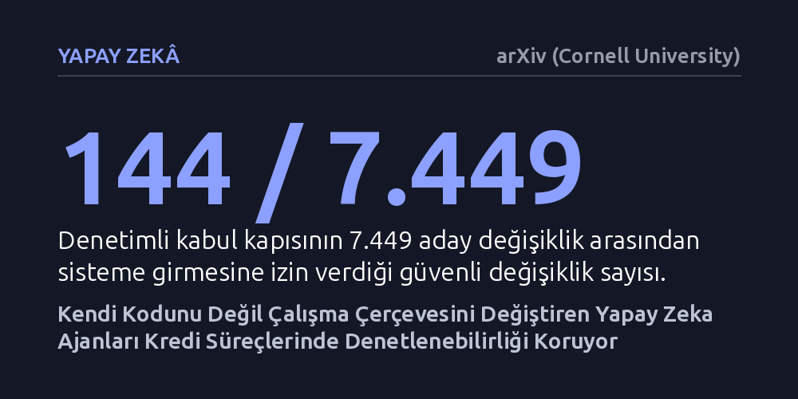

YAPAY-ZEKA · arXiv (Cornell University) · 2026-10-11
Çalışma, kredi süreçlerindeki kural değişikliklerine uyarlanan yapay zeka ajanlarının denetlenebilir kalması için yalnızca çalışma çerçevelerini güncellemelerinin yeterliliğini simülasyonla araştırdı. Denetim kapısıyla korunan bu sınırlandırmanın, 7.449 aday değişiklikten yalnızca güvenli 144 tanesini seçerek hatalı kararları önlediği bulundu.
Bu bulgu, kendi kendini geliştiren yapay zekaların finansal kurallara uyum sağlaması için model ağırlıklarını değiştirmek yerine talimat ve araç katmanını sıkı bir kabul kapısıyla denetlemenin yeterli olduğunu gösterir.

Bankacılık ve kredi tahsis süreçlerinde kullanılan yapay zeka sistemleri, finansal mevzuat ya da risk kuralları değiştiğinde bu yeni şartlara hızla uyum sağlamak zorundadır. Son dönemde geliştirilen ve kendi kendini güncelleyebilen büyük dil modeli ajanları bu uyumu otomatikleştirme potansiyeline sahiptir. Ancak bir yapay zekanın kendi model ağırlıklarını veya iç yapısını değiştirmesi, finansal denetçilerin ihtiyaç duyduğu şeffaf inceleme zeminini tamamen yok eder.
Bir kredi boru hattında yapılan her kural değişiminin arkasında açık bir neden, kayıt altına alınmış bir geriye dönük test ve yetkili onayı bulunmalıdır. Makale yazarının belirttiği gibi, "kendi kendini yeniden yazan bir ajan, denetçinin incelediği nesneyi yok eder." Model ağırlıkları değiştiğinde hangi kararın neden alındığını takip etmek imkansızlaşır ve sistem yüksek riskli finansal süreçlerde yasal denetimden geçemez hale gelir.
Yazar bu sorunu aşmak için ajanın kendi model ağırlıklarının tamamen sabit tutulduğu ve değişimin yalnızca çalışma çerçevesiyle sınırlandığı çift döngülü bir sistem öneriyor. Bu yaklaşımda modelin iç yapısına dokunulmuyor; sadece modele verilen talimat metinleri, araç çağırma mantığı ve temel bileşenlerin birleşim kuralları güncelleniyor. Böylece sisteme yapılan her müdahale, arkasında açık bir gerekçe ve test kaydı bulunan somut bir kod farkı olarak belgelenebiliyor.
Önerilen mimariye, yeni bir kuralı canlıya almadan önce geriye dönük testlerden geçiren ve tüm kararları özet zincirli bir kütüğe yazan bir kabul kapısı eklenmiştir. Yöntemin gücünü ölçmek için gerçek dil modellerinin oluşturabileceği rastlantısallıklar yerine simüle edilmiş bir ajan ve tohum aramalı bir önerici kullanıldı. Sistem, denetleyici yeniden yorumlamalarını temsil eden üç farklı kural ailesi ve üç ayrı zorluk derecesinde, her biri on farklı tohumla simülasyon ortamında sınandı.
Yapılan simülasyonlarda kabul kapısı, üretilen 7.449 aday değişiklik arasından yalnızca 144 tanesinin sisteme girmesine izin verdi. Onaylanan bu değişikliklerin hiçbiri, sistemin daha önce görmediği geçmiş veriler üzerindeki hata oranını artırmadı. Kapı mekanizması, düşük ve orta şiddetteki kural değişimlerinde riskli başvuruları gözden kaçırmadan gereksiz alarmları ideal seviyeye indirmeyi başardı.
Buna karşılık, kabul kapısı devreden çıkarılıp son kayıtlardaki hataları azaltmaya odaklanan klasik sınırsız bir kontrol uygulandığında sistem 309 zararlı değişikliği onayladı. Bu gevşek yaklaşımda hatalı alarmların düşmesinin tek sebebi denetim süzgecinin zayıflatılmasıydı; nitekim 90 deneyin 49'unda gözden kaçan risk oranı yüzde 10'un üzerine çıktı. Ayrıca kapı, kural değişiminden önceki etiketlerle sınandığında tüm adayları reddederek, yeni yorumların geçmiş veride açıkça yeniden etiketlenmesi gerektiğini kanıtladı.
Araştırma, kural değişikliklerinin niteliğine göre sistemin nasıl tepki verdiğini de ortaya koyuyor. Kapsam ve parametre düzeyindeki kural kaymaları yerel talimat düzeltmeleriyle onarılabilirken, köklü yapısal değişiklikler yalnızca temel mantık bloklarının yenilenmesiyle çözülebildi. Bununla birlikte en yüksek yapısal zorluk seviyesinde, kabul kapısının katı toleransı doğru çözümü vakaların yarısında engelledi; bu da güvenlik ile uyum esnekliği arasındaki ince çizgiyi gösteriyor.
Çalışma, önerilen denetim mekanizmalarının Avrupa Birliği Yapay Zeka Yasası'nın yüksek riskli kredi puanlama standartlarıyla doğrudan uyuştuğuna dikkat çekiyor. Buna karşılık ABD'nin Nisan 2026 model riski rehberinin otonom ajanları kapsam dışı bırakması önemli bir mevzuat açığı oluşturuyor. Sonuç olarak, finansal boru hatlarında kendi kendini uyarlayan yapay zekaların güvenliği, modelleri serbest bırakmak yerine her adımı kriptografik olarak kaydedilen sıkı bir çerçeveye hapsetmekten geçiyor.